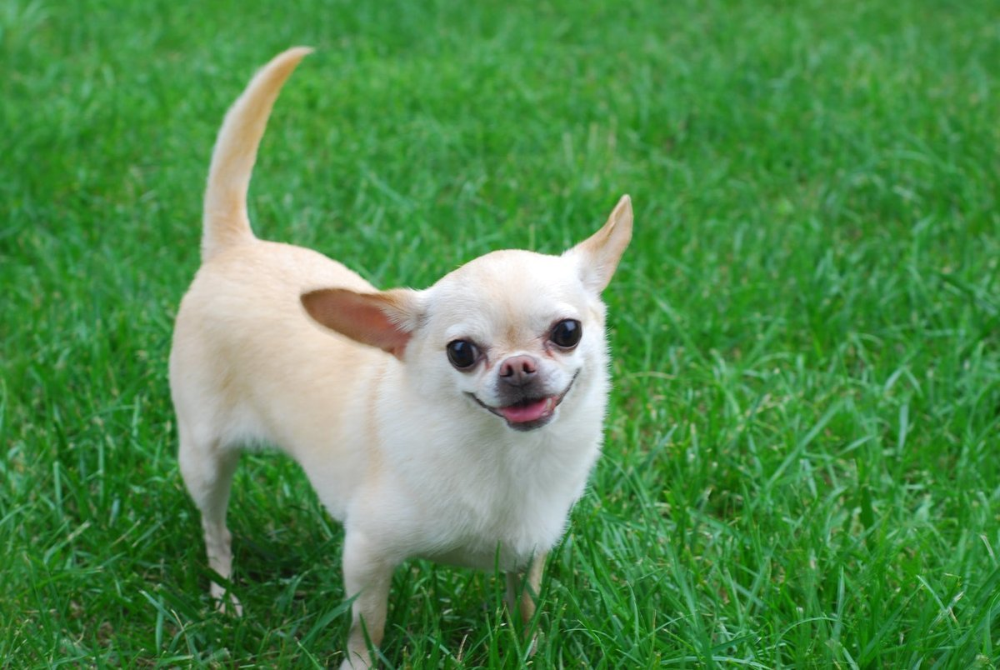
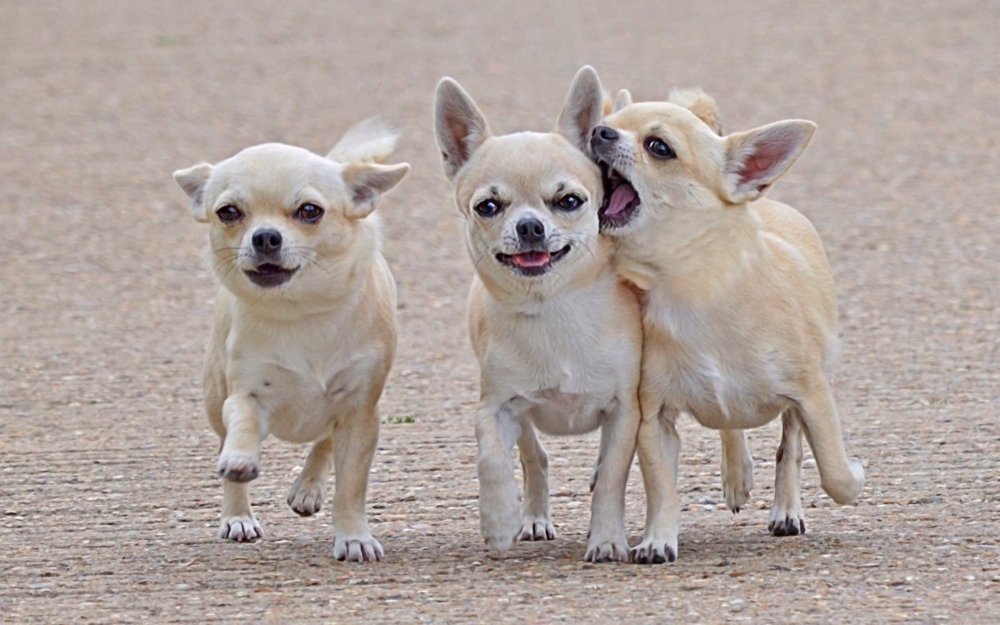
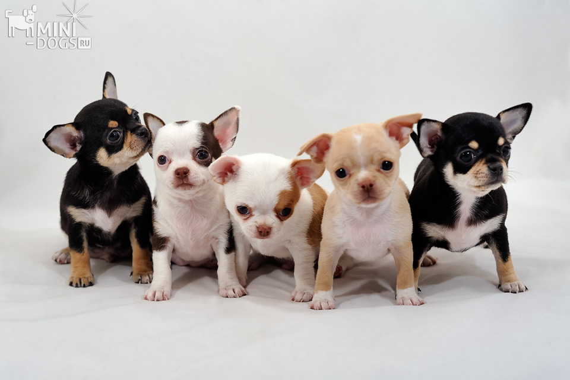
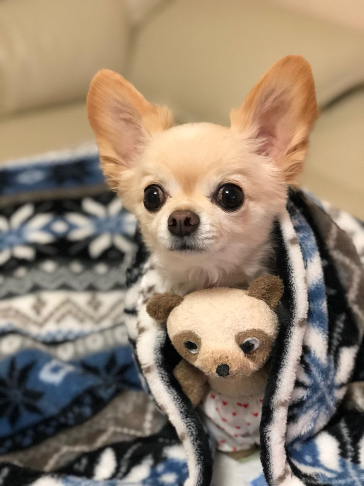

Чихуахуа: история, темперамент и идеальный компаньон для каждого
Порода Чихуахуа, известная своими небольшими размерами, исключительной красотой и богатой историей, завоевала сердца любителей собак по всему миру. От мексиканского штата Чиуауа, где она нашла свои корни, мы перенесемся в наши дни, где эта порода стала еще более популярной. Несмотря на свой небольшой рост, чихуахуа сегодня является настоящим гигантом в мире собачьих личностей. В этой статье мы приглашаем вас познакомиться с загадочной историей этой породы и выяснить, что делает ее такой особенной для каждого любителя четвероногих. Давайте внимательно посмотрим, как чихуахуа заняли свое место в собачьем пантеоне, завоевав сердца людей по всему миру.О породе Чихуахуа
История породы Чихуахуа уходит корнями в доколумбову эпоху и связана с одноименным мексиканским штатом. Согласно легендам, эти маленькие собачки считались священными и часто приносились ацтеками в жертву богам. Однако подлинное происхождение породы относится к IX веку, когда чихуахуа попали на мексиканскую землю, где и получили свое название по штату, в котором были обнаружены. Со временем популярность породы росла, пока в XIX веке она не попала в Соединенные Штаты, где получила признание как одна из самых маленьких и очаровательных пород собак. Сегодня Чихуахуа имеет статус одной из самых узнаваемых пород в мире.
Темперамент и характер
Чихуахуа, несмотря на свои небольшие размеры, отличаются огромным сердцем и независимым характером. Это энергичные собаки, полные уверенности в себе, готовые играть и быть активными. Чихуахуа часто очень преданы своим хозяевам, образуя сильные эмоциональные связи. Однако из-за своего маленького роста они иногда могут проявлять свою уверенность в себе в активной манере, пытаясь установить доминирование над другими собаками, кошками или людьми. Поэтому очень важно правильно их воспитывать, объясняя им четкие правила поведения, передавая любовь и заботу.
Щенки чихуахуа
Щенки Чихуахуа так же очаровательны, как и взрослые собаки этой породы, а возможно, даже более очаровательны благодаря своему крошечному росту и забавному поведению. Наблюдать за развитием щенков Чихуахуа с момента рождения и до их первых шагов - увлекательное занятие. С первых дней жизни они проявляют огромное любопытство, исследуя окружающий мир своими маленькими носами и хвостами, готовыми к приключениям. Эти щенки быстро формируют прочные связи со своими опекунами, демонстрируя безусловную любовь и преданность. Их энергичный характер в сочетании с необычайным мужеством превращает каждый день общения со щенком чихуахуа в уникальную порцию радости и смеха. Помните, что правильный уход, ранняя социализация и позитивная дрессировка - залог того, что эти маленькие меховые шарики будут развиваться здоровыми и счастливыми.
Чихуахуа - идеальный компаньон
Благодаря своим небольшим размерам чихуахуа являются идеальными компаньонами для людей, живущих в небольших помещениях, например, в квартирах. Их потребности в физических нагрузках обычно зависят от того, что предлагается в месте проживания. Для начинающих владельцев чихуахуа могут стать отличным выбором, особенно если у них есть возможность терпеливо и последовательно обучать собаку. Чихуахуа, несмотря на свои небольшие размеры, могут стать отличными друзьями для детей. Однако из-за их хрупкого телосложения взаимодействие между собакой и ребенком всегда должно проходить под присмотром, чтобы случайно не травмировать собаку или ребенка. Чихуахуа, несмотря на свои небольшие размеры, могут быть несколько требовательны к дрессировке. Благодаря своему уму и независимому характеру они иногда могут казаться упрямыми. Однако ключ к успешной дрессировке чихуахуа - это терпение, положительное подкрепление и последовательность. Эти маленькие собачки обычно хорошо реагируют на игры, мотиваторы и поощрения, что делает дрессировку для них удовольствием. Также важно начинать дрессировку с самых ранних этапов жизни собаки, чтобы установить прочную связь и взаимопонимание между хозяином и питомцем. В конечном итоге, несмотря на некоторые трудности, чихуахуа способны выучить множество команд и моделей поведения, что делает дрессировку с ними полезным занятием для обеих сторон.
На сайте Petsitters.by вы найдете профессиональную няню для домашних животных. Это лицо временно берет на себя ответственность за собаку, кошку или другое животное, когда хозяин не может присутствовать. Одним из главных преимуществ использования услуг няни для животных является возможность избежать стресса, связанного с переездом животного в чужую среду, например, в отель для домашних животных. Нитняки не только предлагают ежедневный уход, кормление и прогулки, но и учитывают индивидуальные потребности животного, обеспечивая ему компанию и развлечения. Перейдите на главную страницу и найдите подходящую услугу.
